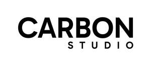

Trade Mark Journal No.2026/012 20 March 2026
UK00004350881 7 March 2026 (9,25,41)

- Class 9
- Computer application software for smartphones and mobile devices in the fields of sports, fitness and exercise or wellness programs, featuring personal training services, coaching, workouts, and fitness assessment; Mobile application software for creating personalized fitness training programs; Personal electronic devices used to track fitness or wellness programs, results, and statistics.
- Class 25
- Clothing; footwear; headgear; Athletic apparel; Sports and leisure clothing; sports and leisure footwear, caps; Stockings; jumpers [pullovers]; pullovers; socks; shirts; tights; pants; trousers; gloves [clothing]; vests; jackets; underpants; leggings [trousers]; shorts; kimonos; tee-shirts; bermuda shorts; sweatshirts; swimsuits; caps; headbands; wristbands; neckerchief; Athletic tops and bottoms for yoga; bottoms as clothing; bras; Loungewear.
- Class 41
- Services of a sports, health, wellness, or fitness club; Sport and fitness classes (in studio, on demand and livestream); Education; Providing of training and coaching; Entertainment; Sporting and cultural activities, organization of sporting events or conferences; Production of films in the field of sports and more precisely sports, health, wellness, or fitness; Workshops for training purposes; Vocational guidance (education or training advice) more precisely in the field of sports, exercise, wellness, or fitness; Games offered on-line on a computer network more precisely in the field of gymnastics, wellness, or fitness; Publication of printed matters, including in electronic form (not downloadable), including on the Internet, in particular in the field of sports, exercise, wellness, or fitness; Production of music; Production of radio and television programs; Recording studio services; Sound engineering services for events; Providing television programs, not downloadable, via video-on-demand services; Rental of training simulators.
Apex Padel Clubs Ltd